Wada basins: mathematical foundations and computational detection
Pablo Almaraz, RElab
2026-05-05
Source:vignettes/wada-basins.Rmd
wada-basins.RmdMathematical foundations of basins of attraction
Dynamical systems and phase space
A dynamical system is a mathematical formalization of the deterministic rule that describes how a point in a geometric space evolves over time. Formally, we consider a phase space \(\mathcal{M} \subseteq \mathbb{R}^d\), which is the set of all possible states of the system, where \(d\) denotes the dimension of the state space (i.e., the number of variables needed to completely specify the system’s state).
The evolution of the system is governed by a flow \(\phi: \mathbb{R} \times \mathcal{M} \to \mathcal{M}\), which is a continuous mapping satisfying:
- Identity: \(\phi(0, x) = x\) for all \(x \in \mathcal{M}\)
- Group property: \(\phi(t + s, x) = \phi(t, \phi(s, x))\) for all \(t, s \in \mathbb{R}\) and \(x \in \mathcal{M}\)
We write \(\phi_t(x) := \phi(t, x)\) to denote the state at time \(t\) starting from initial condition \(x\). The flow is typically generated by an ordinary differential equation (ODE):
\[\frac{d\mathbf{x}}{dt} = \mathbf{f}(\mathbf{x}, t)\]
where \(\mathbf{x} = (x_1, \ldots, x_d)^{\top} \in \mathcal{M}\) is the state vector and \(\mathbf{f}: \mathcal{M} \times \mathbb{R} \to \mathbb{R}^d\) is the vector field defining the dynamics. For autonomous systems, \(\mathbf{f}\) does not depend explicitly on time: \(\mathbf{f} = \mathbf{f}(\mathbf{x})\).
Attractors and their basins
An attractor is an invariant set toward which trajectories converge asymptotically. More precisely, a compact invariant set \(A \subset \mathcal{M}\) is an attractor if there exists an open neighborhood \(U \supset A\) (called the trapping region or fundamental neighborhood) such that:
- Invariance: \(\phi_t(A) = A\) for all \(t \geq 0\)
- Attraction: For every \(x \in U\), \(\lim_{t \to \infty} \text{dist}(\phi_t(x), A) = 0\)
- Minimality: \(A\) contains no proper subset satisfying conditions 1 and 2
Here, \(\text{dist}(y, A) := \inf_{z \in A} \|y - z\|\) denotes the Euclidean distance from a point \(y\) to the set \(A\), where \(\|\cdot\|\) is the standard Euclidean norm in \(\mathbb{R}^d\).
The basin of attraction \(B(A)\) of an attractor \(A\) is the set of all initial conditions whose forward orbits converge to \(A\):
\[B(A) := \left\{ x \in \mathcal{M} : \lim_{t \to \infty} \text{dist}(\phi_t(x), A) = 0 \right\}\]
When a system possesses multiple attractors \(A_1, A_2, \ldots, A_{N_A}\) (where \(N_A \geq 2\) is the number of attractors), their basins partition the phase space into disjoint regions:
\[\mathcal{M} = B(A_1) \cup B(A_2) \cup \cdots \cup B(A_{N_A}) \cup \mathcal{N}\]
where \(\mathcal{N}\) is a set of measure zero containing points that do not converge to any attractor (e.g., unstable invariant sets, saddles, or points escaping to infinity).
Basin boundaries and the Wada property
The boundary of a basin \(B_i := B(A_i)\), denoted \(\partial B_i\), is defined topologically as:
\[\partial B_i := \overline{B_i} \setminus \text{int}(B_i)\]
where \(\overline{B_i}\) is the closure of \(B_i\) (the smallest closed set containing \(B_i\)) and \(\text{int}(B_i)\) is the interior of \(B_i\) (the largest open set contained in \(B_i\)). Equivalently, a point \(p\) belongs to \(\partial B_i\) if and only if every open ball \(\mathcal{B}_\varepsilon(p) := \{x \in \mathcal{M} : \|x - p\| < \varepsilon\}\) of radius \(\varepsilon > 0\) centered at \(p\) intersects both \(B_i\) and its complement \(B_i^c = \mathcal{M} \setminus B_i\).
A point \(p \in \mathcal{M}\) is called a Wada point if it lies on the boundary of every basin simultaneously:
\[p \text{ is a Wada point} \iff p \in \bigcap_{i=1}^{N_A} \partial B_i\]
This means that for every \(\varepsilon > 0\), the ball \(\mathcal{B}_\varepsilon(p)\) contains points from all \(N_A\) basins.
Definition (Wada basins): A collection of basins \(\{B_1, B_2, \ldots, B_{N_A}\}\) with \(N_A \geq 3\) is said to possess the Wada property (or to be Wada basins) if all basin boundaries coincide:
\[\partial B_1 = \partial B_2 = \cdots = \partial B_{N_A} =: \mathcal{J}\]
The common boundary \(\mathcal{J}\) is called the Wada boundary or the Julia-like set of the system.
Theorem (Kuratowski, 1924 [9]): If the boundary \(\mathcal{J}\) separates three or more connected regions in the plane and is itself connected, then \(\mathcal{J}\) must be an indecomposable continuum, meaning it cannot be expressed as the union of two proper closed connected subsets.
This theorem, proved by the Polish mathematician Kazimierz Kuratowski [9], establishes that Wada boundaries possess a peculiar topological structure: they are connected but highly pathological sets with fractal-like properties.
Implications for predictability
The Wada property has profound consequences for the predictability of dynamical systems. Consider an initial condition \(x_0\) located exactly on the Wada boundary \(\mathcal{J}\). By definition, any arbitrarily small neighborhood of \(x_0\) contains points belonging to all \(N_A\) basins. This means:
- Fundamental unpredictability: No finite-precision measurement of \(x_0\) can determine which attractor the trajectory will approach
- Sensitivity to perturbations: An infinitesimal perturbation can direct the system toward any of the \(N_A\) attractors
- Practical implications: Near Wada boundaries, prediction becomes fundamentally impossible regardless of computational precision
This form of unpredictability is distinct from: - Quantum uncertainty: Wada unpredictability is purely classical and deterministic - Lyapunov instability: Which describes exponential divergence of nearby trajectories, but still within the same basin - Statistical mechanics: Which involves many-particle systems and thermodynamic limits
Example dynamical systems
The wadaR package provides several paradigmatic
dynamical systems known to exhibit Wada basins. We present them with
full mathematical details.
The forced damped pendulum
Mathematical formulation
The forced damped pendulum is perhaps the most celebrated example of a physical system exhibiting Wada basins. It describes a rigid pendulum of unit length subject to gravity, viscous damping, and periodic external forcing. The equation of motion is:
\[\ddot{\theta} + \gamma \dot{\theta} + \sin(\theta) = F \cos(\omega t)\]
where:
- \(\theta(t) \in \mathbb{R}\) is the angular displacement from the downward vertical position (measured in radians)
- \(\dot{\theta} = d\theta/dt\) is the angular velocity
- \(\ddot{\theta} = d^2\theta/dt^2\) is the angular acceleration
- \(\gamma > 0\) is the damping coefficient (dimensionless), representing viscous friction proportional to velocity
- \(F \geq 0\) is the forcing amplitude (dimensionless), the strength of the external periodic drive
- \(\omega > 0\) is the forcing frequency; we set \(\omega = 1\) (dimensionless time units)
To analyze this second-order ODE as a dynamical system, we introduce the state vector \(\mathbf{x} = (\theta, v)^{\top}\), where \(v := \dot{\theta}\), obtaining the first-order system:
\[\begin{cases} \dot{\theta} = v \\ \dot{v} = -\gamma v - \sin(\theta) + F \cos(t) \end{cases}\]
Since the forcing is periodic with period \(T = 2\pi\), the natural phase space is the extended phase space \(\mathcal{M} = \mathbb{S}^1 \times \mathbb{R} \times \mathbb{S}^1\), where \(\mathbb{S}^1\) denotes the circle. However, for computational purposes, we typically work in the covering space \(\mathbb{R}^2\).
Attractor structure
For the parameter values \(\gamma = 0.2\) and \(F \approx 1.66\), the system exhibits three coexisting period-1 attractors (limit cycles with the same period as the forcing). These attractors are located approximately at:
- Attractor 1: \((\theta, v) \approx (0, 0)\) — oscillation around the downward equilibrium
- Attractor 2: \((\theta, v) \approx (2\pi, 0)\) — oscillation after one complete clockwise rotation
- Attractor 3: \((\theta, v) \approx (-2\pi, 0)\) — oscillation after one complete counterclockwise rotation
The basins of these three attractors exhibit the Wada property, as first demonstrated by Kennedy and Yorke [1].
Computing and visualizing pendulum basins
# Create the forced damped pendulum system with Wada parameters
pendulum <- forced_damped_pendulum(forcing = 1.66, damping = 0.2)
# System summary
system_info <- data.frame(
Property = c("System", "Number of attractors"),
Value = c(pendulum$description, length(pendulum$attractors))
)
knitr::kable(system_info, col.names = c("Property", "Value"),
caption = "Forced damped pendulum configuration")| Property | Value |
|---|---|
| System | Forced damped pendulum: x’’ + 0.20x’ + sin(x) = 1.66cos(t) |
| Number of attractors | 3 |
# Compute basins at moderate resolution for quick computation
basins_pendulum <- compute_basins(
pendulum,
x_range = c(-pi, pi),
y_range = c(-3, 3),
resolution = 200,
verbose = TRUE
)
#> ⚙ Computing basins: 200x200 grid, 3 attractors
#> ¡ Using Rcpp parallel (pendulum, 19 cores)
#> ¡ Press Esc to abort computation
#> ⏱ Completed in 9.92 seconds
#> ⚠ 21588 points did not converge (53.97%)
# Display summary
print(basins_pendulum)
#> Wada basins of attraction
#> ----------------------------------------
#> Resolution: 200 x 200
#> Number of attractors: 3
#> X range: [-3.142, 3.142]
#> Y range: [-3.000, 3.000]
#> Unclassified points: 21588 (53.97%)
# Visualize using the default palette optimized for 3 basins
plot(basins_pendulum,
title = "Forced damped pendulum: Wada basins (F = 1.66)") +
labs(x = expression(theta), y = expression(dot(theta))) +
theme(plot.title = element_text(hjust = 0.5, face = "bold"))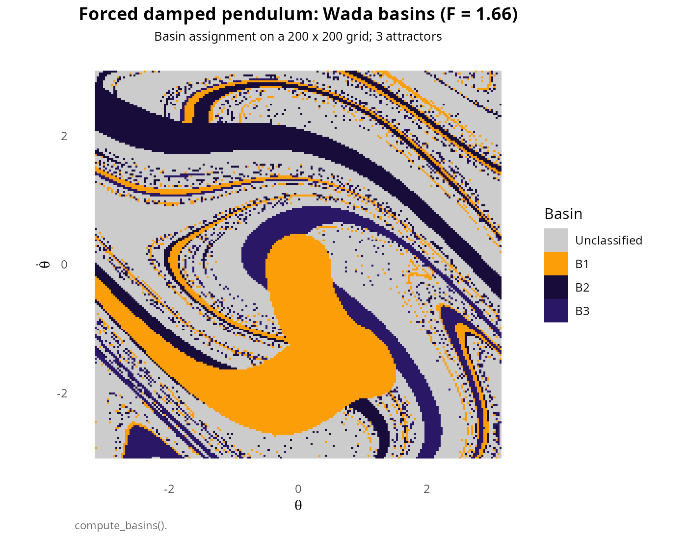
Basins of attraction for the forced damped pendulum with parameters \(\gamma = 0.2\) and \(F = 1.66\). Each color represents the basin of one of the three period-1 attractors. The intricate interweaving of colors near the boundaries indicates the fractal Wada structure.
Effect of forcing amplitude
The basin structure depends sensitively on the forcing amplitude \(F\). Different values produce qualitatively different behaviors:
# Full Wada case: F = 1.66
pend_166 <- forced_damped_pendulum(forcing = 1.66)
basins_166 <- compute_basins(pend_166, c(-pi, pi), c(-3, 3),
resolution = 150, verbose = FALSE)
# Partial Wada case: F = 1.71
pend_171 <- forced_damped_pendulum(forcing = 1.71)
basins_171 <- compute_basins(pend_171, c(-pi, pi), c(-3, 3),
resolution = 150, verbose = FALSE)
# Create comparison plots
p1 <- plot(basins_166, title = "F = 1.66 (full Wada)",
colors = palettes(palette = "okabe_ito")[1:3]) +
labs(x = expression(theta), y = expression(dot(theta)))
p2 <- plot(basins_171, title = "F = 1.71 (partial Wada)",
colors = palettes(palette = "okabe_ito")[1:3]) +
labs(x = expression(theta), y = expression(dot(theta)))
p1 + p2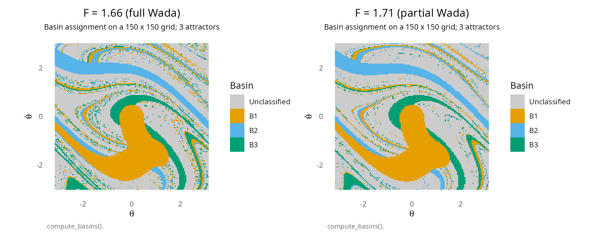
Comparison of basin structures for different forcing amplitudes. Left: \(F = 1.66\) (full Wada). Right: \(F = 1.71\) (partial Wada, where some boundary segments separate only two basins).
Newton fractals
Mathematical formulation
Newton fractals arise from applying the Newton-Raphson root-finding algorithm to polynomials in the complex plane. Consider the polynomial \(P(z) = z^n - 1\), whose roots are the \(n\)-th roots of unity:
\[\zeta_k = e^{2\pi i k/n} = \cos\left(\frac{2\pi k}{n}\right) + i \sin\left(\frac{2\pi k}{n}\right), \quad k = 0, 1, \ldots, n-1\]
These \(n\) roots are equally spaced on the unit circle in the complex plane.
The Newton-Raphson iteration for finding roots of \(P(z)\) is:
\[z_{j+1} = N(z_j) := z_j - \frac{P(z_j)}{P'(z_j)} = z_j - \frac{z_j^n - 1}{n z_j^{n-1}}\]
Simplifying:
\[N(z) = z - \frac{z^n - 1}{n z^{n-1}} = \frac{(n-1)z^n + 1}{n z^{n-1}}\]
This defines a rational map \(N: \hat{\mathbb{C}} \to \hat{\mathbb{C}}\) on the Riemann sphere \(\hat{\mathbb{C}} = \mathbb{C} \cup \{\infty\}\).
Basin structure and the Julia set
For each root \(\zeta_k\), the basin of attraction is:
\[B_k := \left\{ z_0 \in \mathbb{C} : \lim_{j \to \infty} N^{\circ j}(z_0) = \zeta_k \right\}\]
where \(N^{\circ j}\) denotes the \(j\)-th iterate of the Newton map (i.e., \(N\) composed with itself \(j\) times).
The boundary between these basins is the Julia set \(\mathcal{J}(N)\) of the Newton map. A fundamental result in complex dynamics, proved by Przytycki [8], establishes:
Theorem (Przytycki, 1989 [8]): For the Newton map associated with \(z^n - 1 = 0\) with \(n \geq 3\), the basins \(B_0, B_1, \ldots, B_{n-1}\) possess the Wada property: \[\partial B_0 = \partial B_1 = \cdots = \partial B_{n-1} = \mathcal{J}(N)\]
This provides a mathematically rigorous proof that Wada basins exist and are not mere pathologies.
Computing Newton fractal basins
Newton fractals compute very quickly since they involve only algebraic iterations without ODE integration:
# Compute Newton fractal for z^3 - 1 = 0
newton3 <- compute_newton_basins(
n_roots = 3,
x_range = c(-2, 2),
y_range = c(-2, 2),
resolution = 400
)
# Visualize with an aesthetic palette
plot(newton3,
title = expression(paste("Newton fractal: ", z^3 - 1 == 0)),
colors = c("#264653", "#E9C46A", "#E76F51")) +
labs(x = "Re(z)", y = "Im(z)") +
theme_minimal() +
theme(legend.position = "none",
plot.title = element_text(hjust = 0.5, face = "bold"))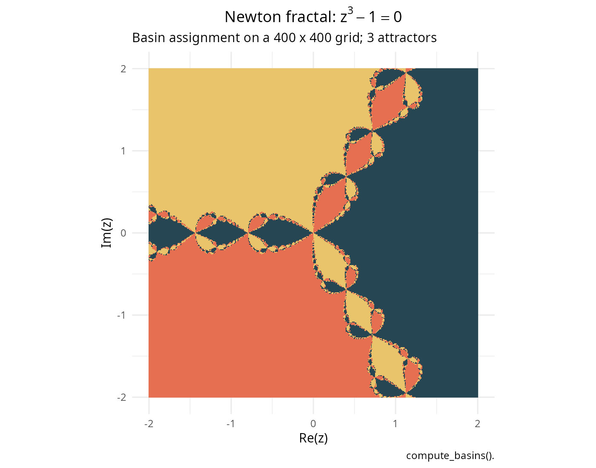
Newton fractal for the polynomial \(z^3 - 1 = 0\). The three basins correspond to the three cube roots of unity: \(1\), \(e^{2\pi i/3}\), and \(e^{4\pi i/3}\). Every point on the boundary (Julia set) is simultaneously on the boundary of all three basins.
Higher-degree Newton fractals
As \(n\) increases, the fractal structure becomes more intricate while maintaining the Wada property:
# Compute Newton fractal for z^5 - 1 = 0
newton5 <- compute_newton_basins(
n_roots = 5,
x_range = c(-2, 2),
y_range = c(-2, 2),
resolution = 400
)
# Use a five-color palette
colors5 <- c("#03071E", "#370617", "#9D0208", "#DC2F02", "#FFBA08")
plot(newton5,
title = expression(paste("Newton fractal: ", z^5 - 1 == 0)),
colors = colors5) +
labs(x = "Re(z)", y = "Im(z)") +
theme_minimal() +
theme(legend.position = "none",
plot.title = element_text(hjust = 0.5, face = "bold"))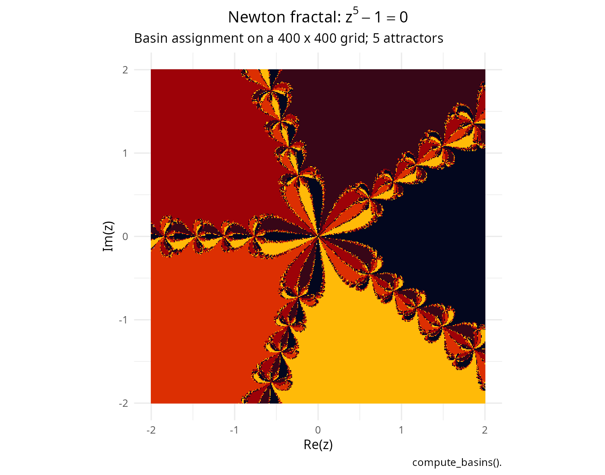
Newton fractal for the polynomial \(z^5 - 1 = 0\), showing five basins with Wada boundaries. The self-similar structure is evident at all scales.
Zooming into the fractal boundary
The self-similar nature of Newton fractals becomes apparent when zooming into the boundary region:
# Full view
zoom1 <- compute_newton_basins(n_roots = 3, c(-2, 2), c(-2, 2), resolution = 300)
# Zoomed view near a boundary region
zoom2 <- compute_newton_basins(n_roots = 3, c(-0.3, 0.3), c(0.6, 1.2), resolution = 300)
p_full <- plot(zoom1, colors = c("#1D3557", "#457B9D", "#A8DADC"),
title = "Full view") +
theme_void() + theme(legend.position = "none",
plot.title = element_text(hjust = 0.5))
p_zoom <- plot(zoom2, colors = c("#1D3557", "#457B9D", "#A8DADC"),
title = "Zoomed boundary") +
theme_void() + theme(legend.position = "none",
plot.title = element_text(hjust = 0.5))
p_full + p_zoom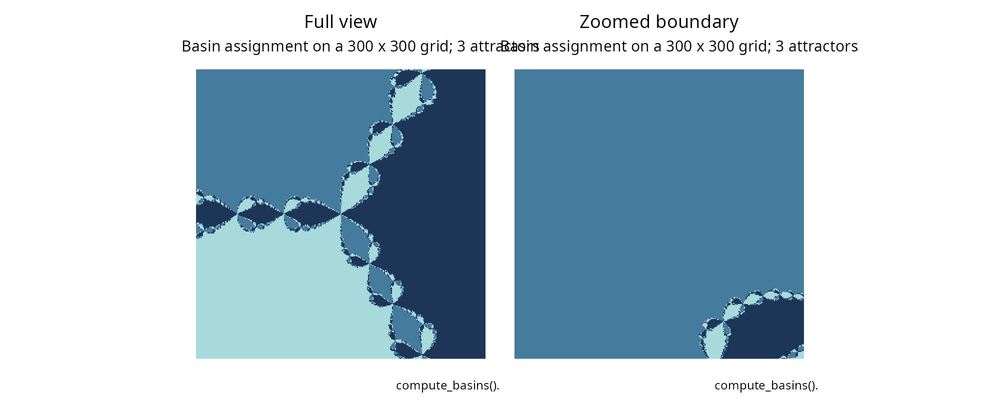
Zooming into the Newton fractal boundary reveals structure at all scales, a hallmark of fractal geometry. The boundary region near \((0, 0.87)\) shows the same qualitative structure as the full fractal.
Basin entropy: quantifying unpredictability
Mathematical definition
Basin entropy, introduced by Daza et al. [6], provides a quantitative measure of the unpredictability inherent in basin structures. It is based on information-theoretic concepts and captures how uncertain we are about the final state given imprecise knowledge of initial conditions.
Box decomposition
Consider a basin matrix discretized on a grid. We partition the phase
space into boxes of size \(\varepsilon \times \varepsilon\) (in grid
units, this corresponds to box_size \(\times\) box_size cells). Let
\(N_{\text{box}}\) denote the total
number of boxes.
For each box \(\mathcal{B}_k\) (\(k = 1, \ldots, N_{\text{box}}\)), we compute the probability \(p_{k,i}\) that a randomly chosen point in box \(\mathcal{B}_k\) belongs to basin \(B_i\):
\[p_{k,i} := \frac{\#\{(x,y) \in \mathcal{B}_k : \text{basin}(x,y) = i\}}{\#\{(x,y) \in \mathcal{B}_k\}}\]
where \(\#\{\cdot\}\) denotes the cardinality (number of elements) of a set.
Local entropy
The local entropy of box \(\mathcal{B}_k\) is the Shannon entropy of the probability distribution \((p_{k,1}, p_{k,2}, \ldots, p_{k,N_A})\):
\[S_k := -\sum_{i=1}^{N_A} p_{k,i} \log_b(p_{k,i})\]
where \(b\) is the base of the logarithm (typically \(b = 2\) for entropy in bits, or \(b = e\) for entropy in nats). By convention, \(0 \log 0 := 0\).
The local entropy satisfies \(0 \leq S_k \leq \log_b(N_A)\), where: - \(S_k = 0\) if box \(\mathcal{B}_k\) is monochromatic (contains points from only one basin) - \(S_k = \log_b(N_A)\) if box \(\mathcal{B}_k\) contains points from all basins with equal probability
Basin entropy
The basin entropy is the average of local entropies over all boxes:
\[S_b := \frac{1}{N_{\text{box}}} \sum_{k=1}^{N_{\text{box}}} S_k\]
Interpretation: - \(S_b \approx 0\): Basins are well-separated with smooth boundaries - \(S_b \approx \log_b(N_A)\): Maximum uncertainty; characteristic of highly intertwined (possibly Wada) basins
Boundary basin entropy
The boundary basin entropy \(S_{bb}\) considers only boxes that intersect the basin boundary (i.e., boxes containing points from two or more basins):
\[S_{bb} := \frac{1}{N_{\partial}} \sum_{k : S_k > 0} S_k\]
where \(N_\partial\) is the number of boundary boxes. For Wada basins, \(S_{bb}\) approaches its maximum value \(\log_b(N_A)\) because every boundary box eventually contains all \(N_A\) basins at sufficiently fine resolution.
Computing basin entropy
# Compute basin entropy for Newton fractal
entropy_newton <- basin_entropy(newton3, box_size = 8)
# Display results
print(entropy_newton)
#> Basin entropy analysis
#> ----------------------------------------
#> Number of attractors: 3
#> Box size: 8 x 8
#> Total boxes: 2500
#> Boundary boxes: 380 (15.2%)
#>
#> Entropy results:
#> S_b (total): 0.1492 bits
#> S_max: 1.5850 bits
#> S_normalized: 0.0941 (0 = monochromatic, 1 = max uncertainty)
#> S_boundary: 0.9816 bits (boundary boxes only)
# Visualize local entropy distribution
plot(entropy_newton) +
labs(title = expression(paste("Local entropy: Newton fractal ", z^3 - 1))) +
theme(plot.title = element_text(hjust = 0.5))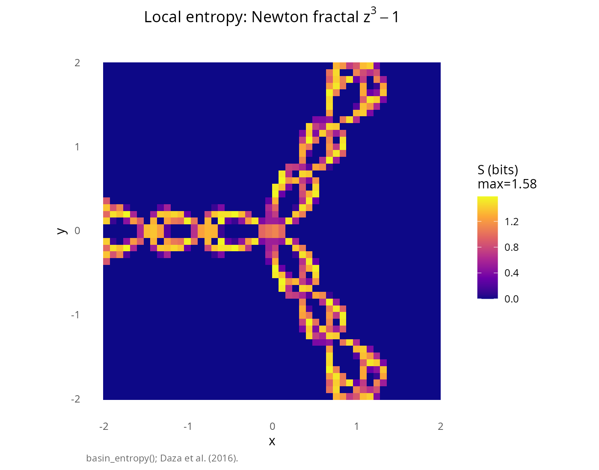
Basin entropy analysis for the Newton fractal \(z^3 - 1 = 0\). The color map shows local entropy values: dark regions indicate monochromatic boxes (low entropy), while bright regions indicate boxes containing multiple basins (high entropy).
# Compute basin entropy for pendulum
entropy_pendulum <- basin_entropy(basins_pendulum, box_size = 8)
# Display results
print(entropy_pendulum)
#> Basin entropy analysis
#> ----------------------------------------
#> Number of attractors: 3
#> Box size: 8 x 8
#> Total boxes: 603
#> Boundary boxes: 404 (67.0%)
#>
#> Entropy results:
#> S_b (total): 0.7429 bits
#> S_max: 1.5850 bits
#> S_normalized: 0.4687 (0 = monochromatic, 1 = max uncertainty)
#> S_boundary: 1.1088 bits (boundary boxes only)
# Visualize
plot(entropy_pendulum) +
labs(title = "Local entropy: forced damped pendulum") +
theme(plot.title = element_text(hjust = 0.5))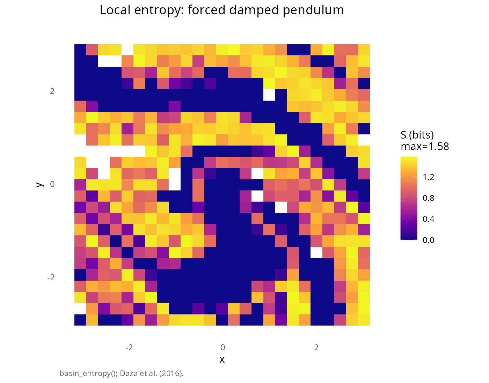
Basin entropy for the forced damped pendulum (\(F = 1.66\)). High entropy regions trace the Wada boundary structure.
Interactive entropy visualization with plotly
For detailed exploration, interactive plots reveal fine entropy structures:
# Create interactive plotly version for Newton fractal
# Using finer box size for more detail
entropy_fine <- basin_entropy(newton3, box_size = 5)
# Generate interactive plot
plot(entropy_fine, plotly = TRUE)Interactive entropy visualization using plotly. Hover over regions to see exact entropy values.
Comparing entropy across systems
# Compare entropy for different systems
entropy_comparison <- data.frame(
System = c("Newton fractal (z\u00B3 - 1)", "Forced pendulum (F = 1.66)"),
S_b = c(entropy_newton$S_b, entropy_pendulum$S_b),
S_normalized = c(entropy_newton$S_normalized, entropy_pendulum$S_normalized),
S_boundary = c(entropy_newton$S_boundary, entropy_pendulum$S_boundary),
S_max = c(log2(3), log2(3))
)
knitr::kable(entropy_comparison,
col.names = c("System", "S\u2097 (bits)", "S normalized",
"S boundary (bits)", "S max (bits)"),
caption = "Basin entropy comparison across systems",
digits = 4,
align = c("l", "r", "r", "r", "r"))| System | Sₗ (bits) | S normalized | S boundary (bits) | S max (bits) |
|---|---|---|---|---|
| Newton fractal (z³ - 1) | 0.1492 | 0.0941 | 0.9816 | 1.585 |
| Forced pendulum (F = 1.66) | 0.7429 | 0.4687 | 1.1088 | 1.585 |
Wada detection methods
The wadaR package implements three complementary
computational methods for testing the Wada property, each based on
different mathematical principles and offering different trade-offs
between speed, accuracy, and the type of insight provided.
The grid method
Theoretical foundation
The grid method, introduced by Daza, Wagemakers, Sanjuán, and Yorke [3], is based on a fundamental topological observation: for true Wada basins, between any two points of different colors (i.e., belonging to different basins), a third color can always be found at sufficiently fine resolution.
Algorithm:
Boundary identification: For each grid cell, count the number of distinct basins \(M\) in its immediate neighborhood (using 8-connectivity, i.e., the Moore neighborhood)
-
Classification: Classify boundary cells as:
- \(M = 2\): Cell borders exactly two basins
- \(M = 3\): Cell borders exactly three basins (Wada point for \(N_A = 3\))
- \(M = N_A\): Cell borders all \(N_A\) basins (fully Wada point)
Refinement: For cells with \(M < N_A\), apply bisection refinement: search for additional basins between existing colors at sub-grid resolution
Statistics: Compute the proportion \(W_m\) of boundary cells that border exactly \(m\) basins
Wada criterion: The basins are Wada if \(W_{N_A} \approx 1\) after refinement, meaning essentially all boundary cells eventually touch all \(N_A\) basins.
Mathematical formulation
Let \(\mathcal{G} = \{(i, j) : 1 \leq i \leq N, 1 \leq j \leq N\}\) be the grid of resolution \(N \times N\). For each grid point \((i, j)\), let \(c_{i,j} \in \{1, 2, \ldots, N_A\}\) denote its basin assignment.
Define the neighbor set: \[\mathcal{N}_{i,j} := \{c_{i+\delta_1, j+\delta_2} : (\delta_1, \delta_2) \in \{-1, 0, 1\}^2 \setminus \{(0,0)\}\}\]
The multiplicity of point \((i, j)\) is \(M_{i,j} := |\mathcal{N}_{i,j}|\) (the number of distinct colors in the neighborhood).
The boundary set is \(\partial \mathcal{G} := \{(i,j) : M_{i,j} \geq 2\}\).
The Wada proportion is: \[W_m := \frac{|\{(i,j) \in \partial\mathcal{G} : M_{i,j} = m\}|}{|\partial\mathcal{G}|}\]
Applying the grid method
# Apply grid method to Newton fractal
grid_newton <- wada_grid_method(newton3, verbose = TRUE)
#> ⚠ Using default pendulum attractors for refinement
#> ¡ Basin matrix: 400 x 400, 3 attractors
#> ⚙ Grid method: 400x400 grid, 3 attractors
#> ¡ Classifying boundary boxes (parallel Rcpp, 19 cores)...
#> ⏱ Classification: 0.02 seconds
#> ¡ Refining 4574 boundary boxes with ODE bisection (parallel Rcpp, 19 cores)...
#> ¡ Press Esc to abort computation
#> ⏱ Refinement: 31.24 seconds
#> ¡ Results:
#> G_2: 2898 boxes (W_2 = 0.2521)
#> G_3: 8598 boxes (W_3 = 0.7479)
#> ⚠ Basin is PARTIALLY WADA or NOT WADA
# Display results
print(grid_newton)
#> Wada basin detection - Grid method
#> ----------------------------------------
#> Number of attractors: 3
#> Total boundary boxes: 11496
#>
#> Boundary classification:
#> G_2 (boundary of 2 basins): 2898 boxes (25.21%)
#> G_3 (boundary of 3 basins): 8598 boxes (74.79%)
#>
#> Result: PARTIALLY WADA BASIN
# Apply grid method to pendulum
grid_pendulum <- wada_grid_method(basins_pendulum, verbose = TRUE)
#> ¡ Basin matrix: 200 x 200, 3 attractors
#> ⚙ Grid method: 200x200 grid, 3 attractors
#> ¡ Classifying boundary boxes (parallel Rcpp, 19 cores)...
#> ⏱ Classification: 0.02 seconds
#> ¡ Refining 8463 boundary boxes with ODE bisection (parallel Rcpp, 19 cores)...
#> ¡ Press Esc to abort computation
#> ⏱ Refinement: 54.96 seconds
#> ¡ Results:
#> G_2: 4244 boxes (W_2 = 0.4032)
#> G_3: 6283 boxes (W_3 = 0.5968)
#> ⚠ Basin is PARTIALLY WADA or NOT WADA
# Display results
print(grid_pendulum)
#> Wada basin detection - Grid method
#> ----------------------------------------
#> Number of attractors: 3
#> Total boundary boxes: 10527
#>
#> Boundary classification:
#> G_2 (boundary of 2 basins): 4244 boxes (40.32%)
#> G_3 (boundary of 3 basins): 6283 boxes (59.68%)
#>
#> Result: PARTIALLY WADA BASINVisualizing boundary classification
# Visualize grid method results
p_grid_newton <- plot(grid_newton, basins = newton3) +
labs(title = "Newton fractal: boundary classification")
p_grid_pendulum <- plot(grid_pendulum, basins = basins_pendulum) +
labs(title = "Pendulum: boundary classification")
p_grid_newton + p_grid_pendulum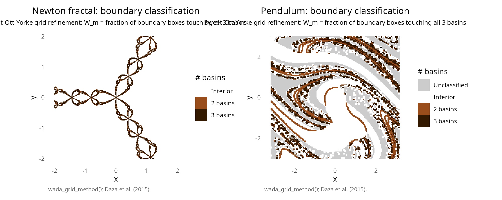
Grid method visualization showing boundary cell classification. The color intensity indicates how many basins each boundary cell touches. Darker colors correspond to higher multiplicity (more basins in the neighborhood).
The merging method
Theoretical foundation
The merging method, introduced by Daza, Wagemakers, and Sanjuán [4], exploits a fundamental invariance property of Wada boundaries: merging basins does not change the common boundary.
For any basin \(B_k\), define the merged basin: \[M_k := \bigcup_{j \neq k} B_j\]
This creates a binary partition: \(B_k\) versus “all others.” The boundary between \(B_k\) and \(M_k\) is called the slim boundary, denoted \(\partial_k\).
Key insight: For Wada basins, all slim boundaries are identical: \[\partial_1 = \partial_2 = \cdots = \partial_{N_A}\]
Proof sketch: If \(p\) is a Wada point, then every neighborhood of \(p\) contains points from all basins. Thus, \(p\) is on the boundary between \(B_k\) and \(M_k\) for every \(k\).
Hausdorff distance
To compare slim boundaries quantitatively, the method uses the Hausdorff distance, a metric on the space of compact subsets.
Definition: For two non-empty compact sets \(X, Y \subset \mathbb{R}^d\), the Hausdorff distance is:
\[d_H(X, Y) := \max\left\{ \sup_{x \in X} d(x, Y), \sup_{y \in Y} d(y, X) \right\}\]
where \(d(x, Y) := \inf_{y \in Y} \|x - y\|\) is the distance from point \(x\) to set \(Y\).
Equivalently: \[d_H(X, Y) = \inf\{\varepsilon > 0 : X \subseteq Y^\varepsilon \text{ and } Y \subseteq X^\varepsilon\}\]
where \(X^\varepsilon := \{z : d(z, X) < \varepsilon\}\) is the \(\varepsilon\)-neighborhood of \(X\).
Wada criterion: Compute \(d_H(\partial_i, \partial_j)\) for all pairs \((i, j)\). If the maximum pairwise distance, normalized by the phase space diameter \(D\), is below a threshold:
\[\frac{\max_{i \neq j} d_H(\partial_i, \partial_j)}{D} < \tau\]
(typically \(\tau = 0.1\) or \(0.05\)), then the basins are declared Wada.
Applying the merging method
# Apply merging method to Newton fractal
merge_newton <- wada_merging_method(newton3, verbose = TRUE)
#> ¡ Basin matrix: 400 x 400, 3 attractors
#> ⚙ Merging method: 400x400 grid, 3 attractors
#> ¡ Computing boundaries (parallel Rcpp)...
#> ⚙ Boundaries [============= ] 33.3% | ETA: 0s ⚙ Boundaries [=========================== ] 66.7% | ETA: 0s ⚙ Boundaries [========================================] 100.0% | ETA: 0s
#> ⚙ Boundaries [========================================] 100.0% | ETA: 0s
#> ⏱ Boundary extraction: 0.04 seconds
#> ¡ Computing Hausdorff distances (parallel k-d tree)...
#> ⏱ Distance computation: 1.52 seconds
#> ¡ Results:
#> max_d = 0.0501
#> min_d = 0.0413
#> (max_d - min_d) / min_d = 0.2127
#> max_d / phase_space_size = 0.0089
#> ✔ Basin has the WADA PROPERTY
# Display results
print(merge_newton)
#> Wada basin detection - Merging method
#> ----------------------------------------
#> Number of attractors: 3
#> Boundary points per merged basin:
#> B_1: 7334 points
#> B_2: 7369 points
#> B_3: 7369 points
#>
#> Hausdorff distances:
#> max_d = 0.0501
#> min_d = 0.0413
#> (max_d - min_d) / min_d = 0.2127
#>
#> Result: WADA BASIN
# Apply merging method to pendulum
merge_pendulum <- wada_merging_method(basins_pendulum, verbose = TRUE)
#> ¡ Basin matrix: 200 x 200, 3 attractors
#> ⚙ Merging method: 200x200 grid, 3 attractors
#> ¡ Computing boundaries (parallel Rcpp)...
#> ⚙ Boundaries [============= ] 33.3% | ETA: 0s ⚙ Boundaries [=========================== ] 66.7% | ETA: 0s ⚙ Boundaries [========================================] 100.0% | ETA: 0s
#> ⚙ Boundaries [========================================] 100.0% | ETA: 0s
#> ⏱ Boundary extraction: 0.01 seconds
#> ¡ Computing Hausdorff distances (parallel k-d tree)...
#> ⏱ Distance computation: 1.80 seconds
#> ¡ Results:
#> max_d = 0.9650
#> min_d = 0.4491
#> (max_d - min_d) / min_d = 1.1486
#> max_d / phase_space_size = 0.1111
#> ⚠ Basin is PARTIALLY WADA or NOT WADA
# Display results
print(merge_pendulum)
#> Wada basin detection - Merging method
#> ----------------------------------------
#> Number of attractors: 3
#> Boundary points per merged basin:
#> B_1: 8578 points
#> B_2: 7439 points
#> B_3: 7018 points
#>
#> Hausdorff distances:
#> max_d = 0.9650
#> min_d = 0.4491
#> (max_d - min_d) / min_d = 1.1486
#>
#> Result: POSSIBLY PARTIALLY WADAVisualizing slim boundaries
# Visualize merging method results
plot(merge_newton, basins = newton3) +
labs(title = "Newton fractal: slim boundary comparison")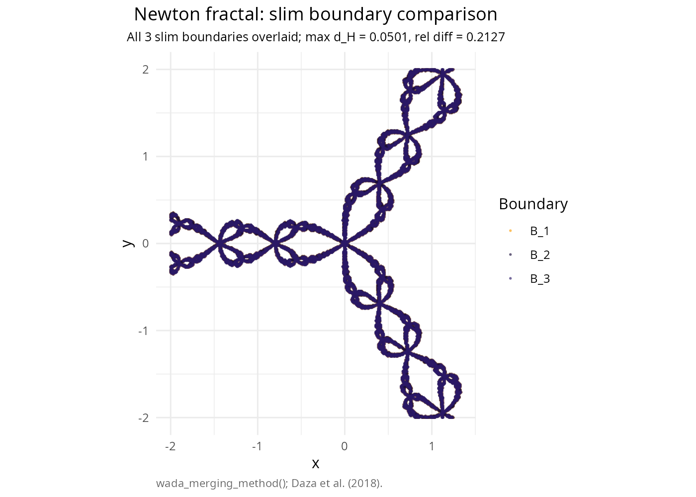
Merging method visualization showing slim boundaries overlaid. For Wada basins, all slim boundaries should coincide visually.
Creating merged basin plots
# Create merged basin visualizations
merged1 <- merge_basins(basins_pendulum, keep_basin = 1)
merged2 <- merge_basins(basins_pendulum, keep_basin = 2)
merged3 <- merge_basins(basins_pendulum, keep_basin = 3)
p_m1 <- plot(merged1, colors = c("#E63946", "#457B9D"),
title = expression(B[1] ~ "vs" ~ M[1]))
p_m2 <- plot(merged2, colors = c("#2A9D8F", "#E9C46A"),
title = expression(B[2] ~ "vs" ~ M[2]))
p_m3 <- plot(merged3, colors = c("#6A4C93", "#F4A261"),
title = expression(B[3] ~ "vs" ~ M[3]))
p_m1 + p_m2 + p_m3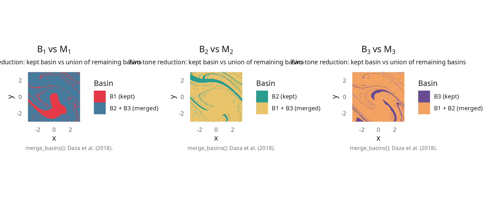
Merged basins showing the binary partition \(B_k\) vs \(M_k\) for different values of \(k\). The slim boundary (white line between colors) is the same for all three mergings in Wada basins.
Comparison of methods
# Summary comparison table
methods_comparison <- data.frame(
System = c("Newton fractal (z\u00B3 - 1)", "Newton fractal (z\u00B3 - 1)",
"Forced pendulum (F = 1.66)", "Forced pendulum (F = 1.66)"),
Method = c("Grid method", "Merging method", "Grid method", "Merging method"),
Metric = c(
sprintf("W\u2083 = %.4f", grid_newton$W_m[3]),
sprintf("rel_diff = %.4f", merge_newton$relative_diff),
sprintf("W\u2083 = %.4f", grid_pendulum$W_m[3]),
sprintf("rel_diff = %.4f", merge_pendulum$relative_diff)
),
Wada = c(
as.character(grid_newton$is_wada),
as.character(merge_newton$is_wada),
as.character(grid_pendulum$is_wada),
as.character(merge_pendulum$is_wada)
)
)
knitr::kable(methods_comparison,
col.names = c("System", "Method", "Value", "Wada detected"),
caption = "Wada detection: method comparison",
align = c("l", "l", "r", "c"))| System | Method | Value | Wada detected |
|---|---|---|---|
| Newton fractal (z³ - 1) | Grid method | W₃ = 0.7479 | FALSE |
| Newton fractal (z³ - 1) | Merging method | rel_diff = 0.2127 | TRUE |
| Forced pendulum (F = 1.66) | Grid method | W₃ = 0.5968 | FALSE |
| Forced pendulum (F = 1.66) | Merging method | rel_diff = 1.1486 | FALSE |
Method selection guidelines
| Method | Computational cost | Best for | Required input |
|---|---|---|---|
| Basin entropy | \(O(N^2/s^2)\) | Quick characterization of uncertainty | Basin matrix only |
| Merging method | \(O(N_A \cdot B^2)\) | Fast Wada screening | Basin matrix only |
| Grid method | \(O(B \cdot 2^d)\) | Definitive Wada confirmation | Basin matrix only |
where \(N\) = resolution, \(s\) = box size, \(B\) = number of boundary points, \(d\) = refinement depth, \(N_A\) = number of attractors.
Recommended workflow:
- Basin entropy: Quick initial characterization; high \(S_b/S_{\max}\) suggests complex (possibly Wada) boundaries
- Merging method: Fast screening for Wada property
- Grid method: Definitive confirmation with higher accuracy
Working with color palettes
The wadaR package includes the palettes()
function providing access to numerous carefully designed color palettes
suitable for scientific visualization.
# Demonstrate different palettes
palettes_to_show <- c("okabe_ito", "tol_bright", "alhambra_nazari", "cb_dark2")
plots <- lapply(palettes_to_show, function(pal_name) {
pal <- palettes(palette = pal_name)
plot(newton3, colors = pal[1:3], title = pal_name) +
theme_void() +
theme(legend.position = "none",
plot.title = element_text(hjust = 0.5, size = 10))
})
(plots[[1]] + plots[[2]]) / (plots[[3]] + plots[[4]])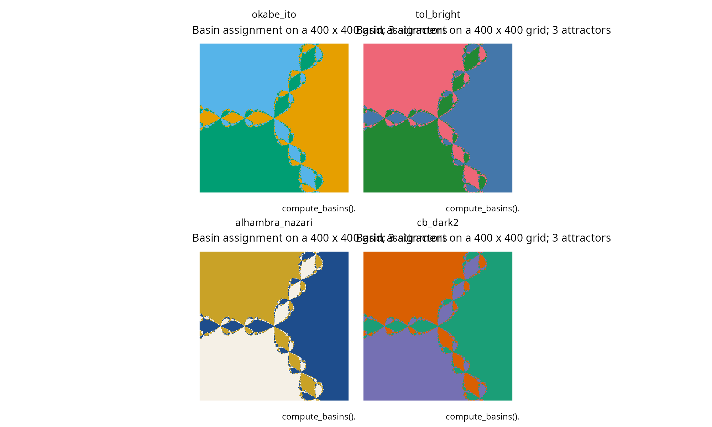
Newton fractal rendered with different color palettes from the palettes() function. Each palette offers different aesthetic and perceptual properties.
Available palette categories
# List available palettes by category
palette_categories <- data.frame(
Category = c("Colorblind-safe", "Alhambra-inspired", "Scientific"),
Palettes = c("okabe_ito, tol_bright, wong, ibm_colorblind",
"alhambra_nazari, alhambra_zellige, alhambra_patio_leones",
"viridis, magma, plasma, inferno, cividis")
)
knitr::kable(palette_categories,
col.names = c("Category", "Available palettes"),
caption = "Color palette categories in wadaR")| Category | Available palettes |
|---|---|
| Colorblind-safe | okabe_ito, tol_bright, wong, ibm_colorblind |
| Alhambra-inspired | alhambra_nazari, alhambra_zellige, alhambra_patio_leones |
| Scientific | viridis, magma, plasma, inferno, cividis |
Continuous gradients with palette_ramp()
When a discrete palette has fewer entries than the number of basins
or scalar levels in a heatmap, palette_ramp() interpolates
a smooth gradient of arbitrary length using
grDevices::colorRampPalette(). Reverse the order with
reverse = TRUE.
ramp_cols <- palette_ramp("viridis", n = 50)
ramp_df <- data.frame(x = seq_along(ramp_cols), y = 1, col = ramp_cols)
ggplot(ramp_df, aes(x = x, y = y, fill = col)) +
geom_tile() +
scale_fill_identity() +
labs(title = "palette_ramp(\"viridis\", n = 50)",
x = NULL, y = NULL) +
theme_void() +
theme(plot.title = element_text(hjust = 0.5))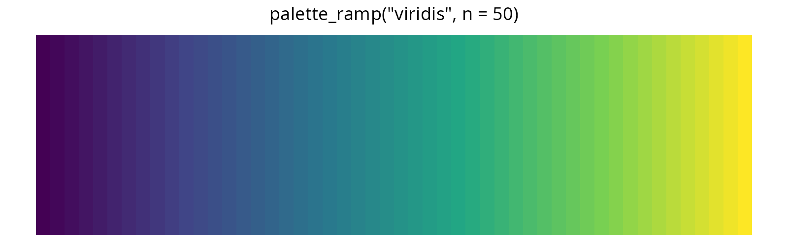
Continuous gradient generated by palette_ramp() from the discrete viridis anchor colors.
Computational considerations
Complexity analysis
Understanding the computational cost of each function helps choose appropriate parameters:
| Function | Time complexity | Space complexity |
|---|---|---|
compute_newton_basins() |
\(O(N^2 \cdot k)\) | \(O(N^2)\) |
compute_basins() |
\(O(N^2 \cdot T/\Delta t)\) | \(O(N^2)\) |
basin_entropy() |
\(O(N^2)\) | \(O((N/s)^2)\) |
wada_merging_method() |
\(O(N_A \cdot B^2)\) | \(O(B)\) |
wada_grid_method() |
\(O(B \cdot 2^d)\) | \(O(B)\) |
where: - \(N\) = resolution (grid points per dimension) - \(k\) = maximum Newton iterations (typically 50-100) - \(T\) = integration time, \(\Delta t\) = time step - \(s\) = box size for entropy - \(B\) = number of boundary points (\(\propto N\) for fractal boundaries) - \(d\) = maximum refinement depth
Parallelization
All computationally intensive functions in wadaR use
OpenMP parallelization for multi-core execution. The
number of cores can be controlled via the n_cores
parameter:
# Use all but one core (default)
basins <- compute_basins(pendulum, c(-pi, pi), c(-3, 3),
resolution = 300)
# Use specific number of cores
basins <- compute_basins(pendulum, c(-pi, pi), c(-3, 3),
resolution = 300, n_cores = 4)
# Single-threaded (for debugging)
basins <- compute_basins(pendulum, c(-pi, pi), c(-3, 3),
resolution = 300, n_cores = 1)Limitations, caveats, and practical guidelines
Understanding the limitations of Wada detection methods is crucial for correctly interpreting results. This section provides essential information for users.
Resolution dependence of Wada detection
The Wada property is fundamentally a mathematical concept defined at infinite resolution. At any finite computational resolution, we can only approximate the true basin structure:
Fractal boundaries are resolution-limited: The fractal structure of Wada boundaries exists at all scales. A finite grid can only capture features larger than the grid spacing \(\Delta x = (x_{\max} - x_{\min})/N\).
Detection thresholds are scale-dependent: The criteria for declaring basins “Wada” (e.g., \(W_{N_A} > 0.95\) for grid method, or \(d_H/D < 0.1\) for merging method) are heuristic thresholds that may need adjustment depending on resolution.
Higher resolution reveals more structure: At coarse resolution, some boundary regions may appear to separate only two basins. Increasing resolution often reveals the third basin “hidden” in thin filaments.
Practical implication: A “NOT WADA” result at low resolution does not prove the basins are non-Wada. Always verify with higher resolution before concluding.
# Demonstrate resolution effect on grid method
resolutions <- c(100, 200, 400)
wada_indices <- numeric(length(resolutions))
for (i in seq_along(resolutions)) {
res <- resolutions[i]
b <- compute_basins(pendulum, c(-pi, pi), c(-3, 3),
resolution = res, verbose = FALSE)
g <- wada_grid_method(b, verbose = FALSE)
# W_m[n_attractors] gives the proportion of boundary cells touching all basins
wada_indices[i] <- g$W_m[g$n_attractors]
}
#> ¡ Basin matrix: 100 x 100, 3 attractors
#> ¡ Basin matrix: 200 x 200, 3 attractors
#> ¡ Basin matrix: 400 x 400, 3 attractors
# Display results as kable table
resolution_effect <- data.frame(
Resolution = resolutions,
W_3 = wada_indices
)
knitr::kable(resolution_effect,
col.names = c("Resolution", "W\u2083 (Wada index)"),
caption = "Resolution effect on Wada index (proportion of 3-basin boundary cells)",
digits = 4,
align = c("r", "r"))| Resolution | W₃ (Wada index) |
|---|---|
| 100 | 0.6635 |
| 200 | 0.5968 |
| 400 | 0.5387 |
The saddle-straddle method: challenges and parameter tuning
The saddle-straddle method is the most computationally demanding and parameter-sensitive of the three methods. Understanding its challenges is essential for successful application.
Why saddle-straddle is difficult
Random search for straddling points: The algorithm must find pairs of points that lie in different merged basins. If one basin is small or basins are highly interleaved, this random search may require many attempts.
Trajectory convergence requirements: Each point must be integrated until it converges to an attractor. Near basin boundaries, trajectories can take very long to converge (critical slowing down).
Chaotic saddle tracking instability: The algorithm tracks the chaotic saddle by iterating straddling segments forward. If both endpoints escape to the same basin, tracking terminates prematurely.
Recommended parameters for wada_straddle_method()
| Parameter | Default | Recommended range | Notes |
|---|---|---|---|
n_points |
5000 | 1000-10000 | Start low for testing, increase for publication |
max_iter |
3000 | 2000-5000 | Must be high enough for convergence |
dt |
0.01 | 0.001-0.01 | Smaller for more accuracy, larger for speed |
straddle_eps |
\(10^{-8}\) | \(10^{-10}\) to \(10^{-6}\) | Bisection precision |
For the forced damped pendulum, use
max_iter >= 3000 to ensure trajectories converge.
Worked example on the forced damped pendulum
A live call on the canonical forced damped pendulum with
n_points = 200 keeps render time under thirty seconds while
still producing recognisable saddles. The strict \(d_H < 0.01 \times \text{diameter}\)
criterion may not fire at this resolution; the diagnostic output remains
informative.
pendulum_straddle <- forced_damped_pendulum(forcing = 1.66)
basins_straddle <- compute_basins(pendulum_straddle,
x_range = c(-pi, pi), y_range = c(-3, 3),
resolution = 120, verbose = FALSE)
straddle_demo <- wada_straddle_method(
system_func = pendulum_straddle$system,
attractors = pendulum_straddle$attractors,
x_range = c(-pi, pi),
y_range = c(-3, 3),
n_points = 200,
max_iter = 2000,
dt = 0.01,
verbose = FALSE
)
print(straddle_demo)
#> Wada basin detection - Saddle-straddle method
#> ---------------------------------------------
#> Number of attractors: 3
#>
#> Saddle statistics:
#> S_1: 209 points, d_s = 5.3397
#> S_2: 209 points, d_s = 4.6389
#> S_3: 209 points, d_s = 5.0811
#>
#> Pairwise Hausdorff distances:
#> d_H(S_1, S_2) = 2.848631
#> d_H(S_1, S_3) = 1.971463
#> d_H(S_2, S_3) = 3.523936
#>
#> Result: NOT WADA or PARTIALLY WADA
#> (Multiple saddles detected)
plot(straddle_demo, basins = basins_straddle)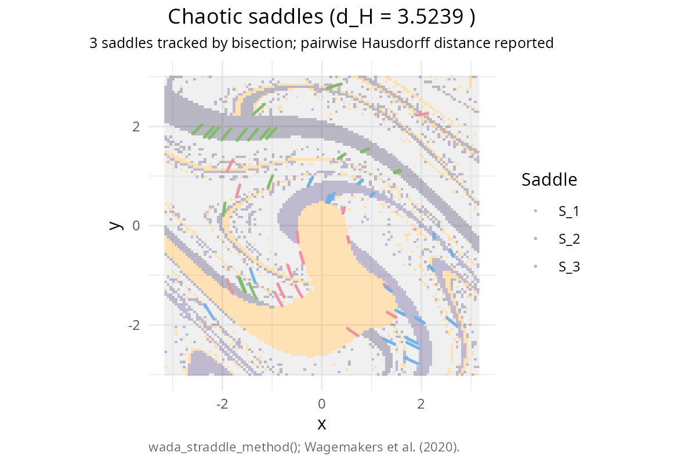
Saddle-straddle diagnostic on the forced damped pendulum at F = 1.66. Coloured points are the chaotic saddles tracked from each merged-basin pair.
The strict Wada criterion
The saddle-straddle method uses a very strict criterion: \(d_H < 0.01 \times \text{diameter}\), meaning all saddles must be essentially identical. This threshold may be too conservative for practical purposes. A “NOT WADA” result from this method should be interpreted as “saddles show measurable differences” rather than “definitely not Wada.”
Partial Wada basins
Many systems exhibit partial Wada behavior, where:
- Some boundary segments touch all \(N_A\) basins (Wada regions)
- Other boundary segments separate only two basins (non-Wada regions)
Example: The forced damped pendulum at \(F = 1.71\) shows partial Wada behavior. The basin boundary contains both fully Wada regions and regions where only two basins meet.
Detection: Partial Wada basins will show:
- Grid method: \(W_{N_A} < 1\) (some boundary cells have \(M < N_A\))
- Merging method: Moderate Hausdorff distances (slim boundaries differ slightly)
- Straddle method: Saddles may not fully overlap
# Compute and analyze partial Wada case
pend_partial <- forced_damped_pendulum(forcing = 1.71)
basins_partial <- compute_basins(pend_partial, c(-pi, pi), c(-3, 3),
resolution = 200, verbose = FALSE)
grid_partial <- wada_grid_method(basins_partial, verbose = FALSE)
#> ¡ Basin matrix: 200 x 200, 3 attractors
# Display partial Wada analysis as kable
partial_wada_df <- data.frame(
Metric = c("G\u2082 (2-basin boundary)", "G\u2083 (3-basin boundary)",
"W\u2083 (Wada index)"),
Value = c(sprintf("%.1f%%", 100 * grid_partial$W_m[2]),
sprintf("%.1f%%", 100 * grid_partial$W_m[3]),
sprintf("%.4f", grid_partial$W_m[grid_partial$n_attractors]))
)
knitr::kable(partial_wada_df,
col.names = c("Metric", "Value"),
caption = "Partial Wada analysis (F = 1.71)",
align = c("l", "r"))| Metric | Value |
|---|---|
| G₂ (2-basin boundary) | 55.3% |
| G₃ (3-basin boundary) | 44.7% |
| W₃ (Wada index) | 0.4472 |
plot(grid_partial, basins = basins_partial) +
labs(title = "Partial Wada: boundary classification (F = 1.71)")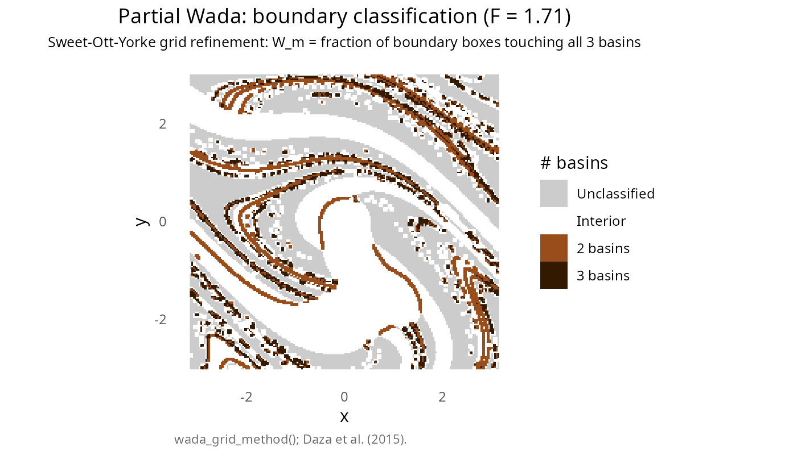
Partial Wada basins at F = 1.71. The grid method classification shows regions where all three basins meet (dark) versus regions where only two basins meet (lighter).
Default parameters and their rationale
compute_basins() defaults
| Parameter | Default | Rationale |
|---|---|---|
resolution |
500 | Balance between detail and computation time |
t_max |
100 | Sufficient for most trajectories to converge |
dt |
0.01 | Accurate RK4 integration for pendulum dynamics |
Warning: For systems with slow convergence (e.g.,
near bifurcations), increase t_max.
basin_entropy() defaults
| Parameter | Default | Rationale |
|---|---|---|
box_size |
10 | Coarse enough to capture local mixing, fine enough for detail |
log_base |
2 | Entropy measured in bits (information theory convention) |
Tip: Smaller box_size reveals finer
structure but increases noise. Larger box_size gives
smoother entropy maps but may miss thin boundary features.
Common pitfalls and troubleshooting
1. “All methods say NOT WADA for a system known to be Wada”
Possible causes: - Resolution too low - Integration time too short (trajectories not converging) - Attractor definitions incorrect
Solutions: - Increase resolution to 400-500 -
Increase t_max (try 150-200) - Verify attractor locations
and radii
2. “Saddle-straddle method finds no saddle points”
Possible causes: - max_iter too low
(trajectories not converging) - Random search failing to find straddling
points - Phase space range poorly chosen
Solutions: - Increase max_iter to
3000-5000 - Ensure phase space covers regions of all basins - The C++
implementation now uses 50,000 random attempts (previously 10,000)
3. “Basin computation is very slow”
Possible causes: - High resolution with ODE systems - Long integration time - Too many cores causing overhead
Solutions: - Use Newton fractals for fast testing
(no ODE integration) - Reduce resolution for exploration (100-200) - Set
n_cores explicitly (sometimes fewer cores is faster due to
overhead)
4. “Merging method gives different result than grid method”
Explanation: The two methods test different aspects: - Grid method: Local property (do boundary cells touch all basins?) - Merging method: Global property (are slim boundaries identical?)
For true Wada basins, both should agree at high resolution. Disagreement suggests partial Wada or insufficient resolution.
Best practices summary
- Start with low resolution (100-200) for exploration, increase for final analysis
- Use Newton fractals for fast testing of analysis pipelines
- Check multiple methods - agreement increases confidence
- Be cautious with “NOT WADA” conclusions - may be resolution-limited
-
For saddle-straddle: use
max_iter >= 3000andn_points >= 2000 - Document your parameters - results depend on parameter choices
- Consider computational cost - plan accordingly for high-resolution runs
References
[1] Kennedy, J., & Yorke, J. A. (1991). Basins of Wada. Physica D: Nonlinear Phenomena, 51(1-3), 213-225. doi:10.1016/0167-2789(91)90234-Z
[2] Nusse, H. E., & Yorke, J. A. (1996). Wada basin boundaries and basin cells. Physica D: Nonlinear Phenomena, 90(3), 242-261. doi:10.1016/0167-2789(95)00249-9
[3] Daza, A., Wagemakers, A., Sanjuán, M. A. F., & Yorke, J. A. (2015). Testing for basins of Wada. Scientific Reports, 5, 16579. doi:10.1038/srep16579
[4] Daza, A., Wagemakers, A., & Sanjuán, M. A. F. (2018). Ascertaining when a basin is Wada: the merging method. Scientific Reports, 8, 9954. doi:10.1038/s41598-018-28119-0
[5] Wagemakers, A., Daza, A., & Sanjuán, M. A. F. (2020). The saddle-straddle method to test for Wada basins. Communications in Nonlinear Science and Numerical Simulation, 84, 105167. doi:10.1016/j.cnsns.2020.105167
[6] Daza, A., Wagemakers, A., Georgeot, B., Guéry-Odelin, D., & Sanjuán, M. A. F. (2016). Basin entropy: a new tool to analyze uncertainty in dynamical systems. Scientific Reports, 6, 31416. doi:10.1038/srep31416
[7] Daza, A., Wagemakers, A., & Sanjuán, M. A. F. (2022). Classifying basins of attraction using the basin entropy. Chaos, Solitons & Fractals, 159, 112112. doi:10.1016/j.chaos.2022.112112
[8] Przytycki, F. (1989). Remarks on the simple connectedness of basins of sinks for iterations of rational maps. In Dynamical Systems and Ergodic Theory, Banach Center Publications, 23(1), 229-235. doi:10.4064/-23-1-229-235
[9] Kuratowski, K. (1924). Sur les coupures irréductibles du plan. Fundamenta Mathematicae, 6, 130-145.
[10] Aguirre, J., Viana, R. L., & Sanjuán, M. A. F. (2009). Fractal structures in nonlinear dynamics. Reviews of Modern Physics, 81(1), 333-386. doi:10.1103/RevModPhys.81.333
[11] Feudel, U. (2008). Complex dynamics in multistable systems. International Journal of Bifurcation and Chaos, 18(06), 1607-1626. doi:10.1142/S0218127408021233
[12] Ott, E. (2002). Chaos in dynamical systems (2nd ed.). Cambridge University Press. ISBN: 978-0-521-01084-9.
[13] Strogatz, S. H. (2015). Nonlinear dynamics and chaos: with applications to physics, biology, chemistry, and engineering (2nd ed.). Westview Press. ISBN: 978-0-8133-4910-7.